Manual
Fit-o-mat written and © by Andreas Möglich 2017-2020, Universität Bayreuth, Germany
Released under the GNU General Public License version 3.0 or later
andreasmoeglichuni-bayreuthde
Möglich, A. (2018) An open-source, cross-platform resource for nonlinear least-squares curve fitting. J Chem Educ 95(12), 2273-2278 [doi]
General remarks
Purpose & audience
Fit-o-mat is an all-purpose, open-source, cross-platform program for nonlinear least-squares data fitting. The software is written in Python 3 and resorts to the Python libraries NumPy and SciPy for numerical methods, and to matplotlib for visualization. The program is operated via a graphical user interface implemented in PyQt5. In a nutshell, Fit-o-mat provides a front-end to data-fitting algorithms implemented in Python and thereby strives to unlock their application for a broad audience, including people less versed in computer programming.
The intended target audience for Fit-o-mat is anybody interested in nonlinear least-squares analysis, specifically but not limited to students, teachers and researchers in the life sciences. As a case in point, we have been using the program in the classroom and for preparing figures for publication.
Gallery
A few examples of graphics prepared with Fit-o-mat (in a matter of minutes only).
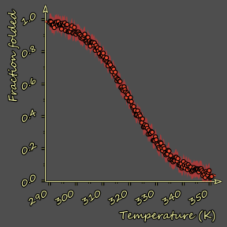
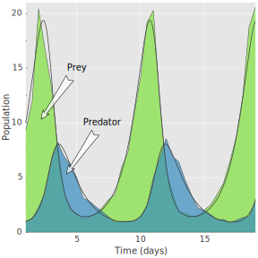
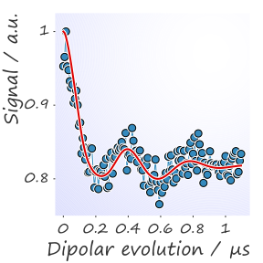
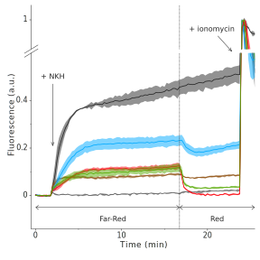
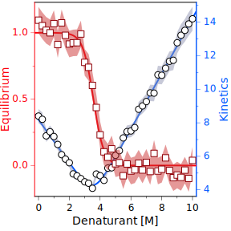
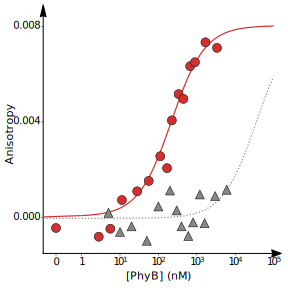
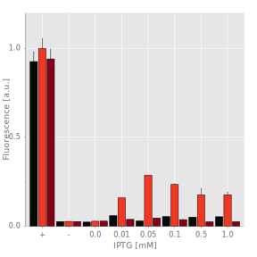
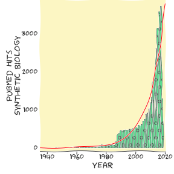
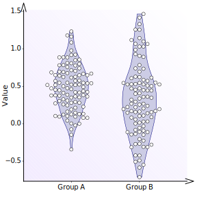
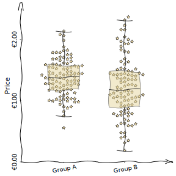
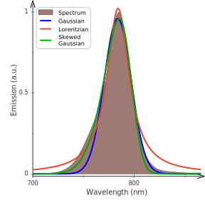
Disclaimer
The program is released under the GNU General Public License version 3.0 or later. Hence, it can be freely used and distributed as long as it is unmodified. Use at your own responsibility, the author cannot be held responsible for any data loss etc. If you encounter bugs, try to reproduce, save program state right before bug occurs (cf. below) and send to andreasmoeglichuni-bayreuthde. Feature requests and illustrations for the figure gallery may also be sent to the same address.
If you employ Fit-o-mat in a publication, please acknowledge use:
Möglich, A. (2018) An open-source, cross-platform resource for nonlinear least-squares curve fitting. J Chem Educ 95(12), 2273-2278, doi: 10.1021/acs.jchemed.8b00649 [doi]
Features
Fit-o-mat attempts to meet these objectives:
- open-source, cross-platform, Python-based architecture
- free to copy, free to share, facilitate data exchange
- least-squares fitting to arbitrary target functions, including discontinuous and numerical functions
- flexible online modification of fit parameters and function
- global fit of multiple data sets and functions
- publication-quality graphics in various formats
- tutorial mode to aid teaching
- enthuse people for Python
Installation
Fit-o-mat requires a working Python 3 installation and the following modules, all of which are pretty standard: PyQt5, sys, glob, functools, copy, ast, time, os, webbrowser, matplotlib, xlrd, xlsxwriter, openpyxl, numpy, scipy, io, zipfile. To install Python 3, the following information may be helpful.
The actual Fit-o-mat program is a Python script named fit-o-mat.py. Copy this script as well as the accompanying file folders to a desired directory. Run the Python program. (Under Linux/OS X, the script assumes that the Python 3 interpreter is located at /usr/bin/python3.) If installation has been successful, a program window should now appear that depending upon operating system looks approximately like this.
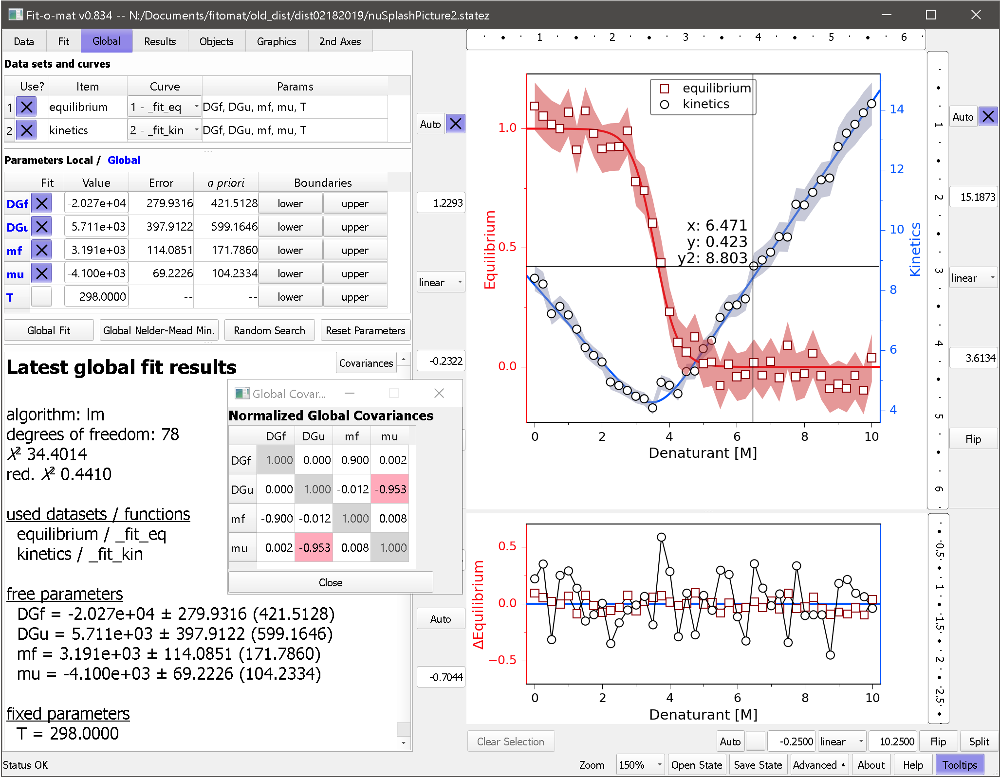
Troubleshooting
The following list contains problems that may occur when using Fit-o-mat and shows how to address them:
Tutorials
How to learn using Fit-o-mat? One option certainly is to go through this manual but arguably the best way to learn using (and liking) Fit-o-mat is to actually try it out. In this spirit, Fit-o-mat comes with several tutorial files that can be executed via the 'Open State' button located in the bottom right corner of the program window (or, by pressing Ctrl-O, or, by dragging the state file on the program window). To familiarize themselves with the core functionality of Fit-o-mat, fresh users are advised to go through these tutorials. Instructors may add their own tutorials as they see fit. Moreover, the button 'Tooltips' in the bottom right of the program window activates tooltips when hovering over elements of the user interface.
Credits
Kudos to my research group at Universität Bayreuth for patience, comments, inspiration, testing, beta-testing and (rather painful) alpha-testing. Thanks to my old pals Max2, Marvin, Falko et al. at Humboldt-Universität zu Berlin for hooking me up with Python (used to be a camelid before). Thanks to Julia Dietler, Nischal Karki and Vincent Emann, and Drs. Christian Kambach, Jochen Reinstein, David Richter, Dagmar Wachten, Michael Weyand, and Brian Zoltowski for stimulating discussion and motivation.
Feature reference
Main window
The program window is divided into two halves, with the left showing one of six tabs and the right displaying main and residuals plots. The usage of the six tabs is detailed below. The right part of the window allows to set limits and scale (linear or log) for the x any y axes; the checkboxes turn on/off automatic zoom to current data/curve during program usage. The button 'split' in the bottom right corner turns on/off a split x axis; once turned on, a second plot will be displayed next to the principal one. This option is for example useful for plotting split log and linear axes. The button 'Clear Selection' below the plot unselects any data points currently selected (see 'Results' tab for more details on selection).
Clicking in the main graph area elicits a number of actions as follows:
- left click - interactive zoom of plot axes limits to desired region
- right click - unzoom plot axes limits to previous view
- middle click - toggles on/off mouse cursor
- left double click - when double-clicking on a graphics object, its configuration menu is brought up; double-clicking on plot canvas toggles on/off mouse cursor
- Ctrl key + mouse wheel - set magnification of plot
- Shift key + left click - when holding the Shift key and left-clicking on the plot canvas, a lasso selector appears and allows interactive selection of data (see 'Results' tab for more details on selection); when Shift-left-clicking on an extras object (e.g., a geometrical shape or a label), its x and y coordinates can be interactively adjusted
- Ctrl key + left click - when holding the Ctrl key and left-clicking on an extras object (e.g., a geometrical shape or a label), its size can be interactively adjusted
- Shift and Ctrl keys + left click - when holding the Shift and Ctrl keys and left-clicking on an extras object (e.g., a geometrical shape or a label), its angular orientation can be interactively adjusted
The very bottom of the program window contains a status bar that displays messages in case of problems during program usage. Watch this space to become aware of (and hopefully solve) any problems. At the right edge of the status bar, buttons are available for saving and loading the current state (or, session) of the program; for controlling the magnification of on-screen display; and for accessing advanced program options (additional settings for export, graphics options, minimization and random search -- use with care). Additional buttons access the online help and activate tooltips when hovering over elements of the user interface.
Fit-o-mat responds to a number of keyboard shortcuts as follows:
- Ctrl-1 through Ctrl-7 - switch between the different tabs of the Fit-o-mat program
- Ctrl-I - import data file
- Ctrl-O - open state file
- Ctrl-S - save state file
- Ctrl-F - fit data
- Ctrl-N - numerically minimize deviation between data and fit
- Ctrl-P - export graphics
- Ctrl-G or F3 - generate report of current plot and fit results
- F1 - display help
- F5 - display print preview
- Ctrl-+ and Ctrl-- - set plot magnification
Data tab
The purpose of this tab is to import data, and to optionally reduce and transform them.
- Open File - data files in Excel and text format (tab-, comma-, or whitespace-delimited) are supported. Provided the optional Python module Pycorn is installed on your system, .res files from the Äkta Unicorn chromatography software can also be imported. Once a file has been loaded, the below table is populated. In case of Excel files with several sheets, a pertinent selector dialog is displayed. Data rows in the table can be selected by mouse or keyboard. Cells can be edited by double-clicking on them or just typing new contents. By left-clicking on the table header, the role of a given data column can be specified, i.e. none, x and y values and errors, or data labels. Right click on the table header allows sorting of the table based on the selected column. Via Ctrl+left click on the column header, the data column can be transformed. To this end, enter a formula in the dialog where individual columns in the data sheet can be accessed via C1, C2, etc., and the row number via ROW. For example, clicking on column 1 and then entering 'C1 = C1 - 1' subtracts 1 from each value in column 1. Likewise, entering 'C1 = 2 * ROW' calculates the values in column 1 as twice the row index.
- Blank/Resize - Use the context menu to alter the dimensions of the data sheet and/or blank it. Beware that if the dimensions are reduced, the contents of all cells outside the new limits will be irretrievably deleted.
- Replace Comma - Certain countries use the comma character (,) to delimit decimal numbers but Fit-o-mat expects decimal numbers with a period delimiter (.). Use this button, to replace all commata in data table with periods.
- Transpose? - Check this button to transpose data sheet, i.e. swap columns and rows.
- Error options - Toggle the push buttons to import data with x and/or y errors. Choose between using no errors, individual data errors in specified column (or, none if column is not assigned), constant error and proportional error. Check 'propagate?' to rigorously propagate data errors through all dat reduction and transformation steps.
- Data reduction - Toggle the push button to activate data reduction on import. Data can be reduced by skipping or averaging n data points. The option 'mvavg' calculates a moving average over n consecutive data points, and the option 'log' logarithmically reduces number of data points to target number (approximately).
- Data transform - Toggle the push buttons to activate data transformation on import. Formulas can be entered to transform the x and y values. For example, entering 'x = y' and 'y = x' swaps x and y. Likewise, 'x = x + 5' shifts data in x by 5.
- Import Data - The currently selected data rows are imported with the current settings for error, data reduction and transform. When applying the reduction and transformation steps, data errors will optionally be propagated (that is, if 'propagate?' is checked).
- Import & Create - As the 'Import Data' function, but create a new data set into which to import the data.
- Import Series - This function iteratively imports data sets starting with the currently selected y column and then continuing for all (unassigned) columns to the right of this initial column. To speed up graphics, display of data is switched to line graphics with no markers. Other than that, the comments for the 'Import Data' function apply.
Fit tab
The purpose of this tab is to fit the data.
- Function - Use the top-most drop-down menu allows to select fitting functions. These are actual text files that (by default) reside in the 'functions' subdirectory. Once a fit function has been selected, the parameter and formula fields and the parameter table are updated, and the new function is plotted over the current x interval.
- Parameters - Use this entry field to specify which parameters the fit formula is using. Note that the independent variable is always assumed to be 'x' and the return variable is always assumed to be 'y'. Hence, 'x' and 'y' must not be specified here.
- Formula entry field - This field contains the current fit formula which can be edited at will. The entry field turns red if a fit function throws an error when it is plotted. In this case, also watch the status bar which displays information on the underlying Python error and may help you resolve the problem. Note that entering new formula may prove somewhat of a challenge to new users -- best start from an existing function file and modify as desired.
- Save Fit Function - The current fit formula and parameter values can be saved to file. By default, all fit formula files end in the suffix '.ffunc' and reside in the 'functions' subdirectory. Provided that you adhere to these default settings, newly saved fit formulae will then also appear in the function drop-down selector.
- Apply Fit Function - Use this button to apply a previously edited fit function. Note that any changes made to the fit formula in the above entry field only become active once this button is clicked. By contrast, if a fit function has been chosen via the drop-down selector, it has been applied already and this button need not be clicked.
- Parameter table - Use checkboxes to restrain parameters to set values or to optimize them during fit. Entry fields hold current parameter values. Adjacent column shows asymptotic standard errors from last fit. (Note that these errors are calculated a posteriori, i.e. based on estimates of the uncertainties for the individual data points. The next column reports a priori errors, provided uncertainties for the individual data points were defined. If in doubt, read up or use the regular a posteriori errors to be on the safe side.) In the final column, you may specify lower and upper boundaries for parameters during fitting, numerical minimization and random search.
- Fit data - Nonlinear least-squares optimization is performed for the currently selected data sets and curves, cf. Objects tab. If the data contain x errors, optimization is done by orthogonal distance regression (odr), and parameter boundaries (if present) are ignored. Otherwise, fitting is performed by Levenberg-Marquardt (lm) if no boundaries are specified, and by trust region reflective (trf) if boundaries have been set. It is generally recommended to try fitting your data with no parameter boundaries set. Fitted parameters are updated in the parameter table as are curve and residuals in the plot. If start parameters are ill-chosen, the fit may not converge to the global minimum but be trapped in a local minimum. If so, try adjusting start parameters, either manually or by using the 'Minimization' or 'Random search' options, and fit again.
- Minimization - Starting from the current set of parameters, Fit-o-mat tries to find better agreement between data and fit by minimization. By default, the Nelder-Mead algorithm is used but other algorithms can be chosen in the Advanced settings. If parameter boundaries are set, then the minimization will be done by an algorithm supporting this. A progress window pops up that provides information on the process and allows to terminate the procedure. Note that this function does not calculate confidence intervals for the parameters, but rather it is well suited to determine suitable start parameters for a subsequent least-squares fit.
- Random Search - Starting from the current set of parameters, Fit-o-mat tries to find better agreement between data and fit by random variation of parameters. If parameter boundaries are specified, the random search will heed these. A progress window pops up that provides information on the process and allows to terminate the procedure. Note that this function does not perform an actual fit of the data, but rather it is ideally used to determine suitable start parameters for a subsequent least-squares fit.
- Reset Parameters - Upon loading or saving a fit function (cf. above), the current function parameters are stored in memory. Use this function, to revert to the previously saved parameter values. (Useful when a fit has not converged.)
- Fit results - The bottom text field displays information on the last fit.
Global tab
This tab allows global fitting of several data sets to one or several functions.
- Data sets and curves - Each line in the table represents one data set and the fit function associated with this data set. Use checkbox to control whether the respective data set is considered for global fitting. Use drop-down selection to choose which function the particular data set is fitted to within the global fitting process. (Fit functions need to be specified in the Fit tab beforehand. Use the Objects tab to create additional functions for global fitting.) The final column of the table lists the parameters of the selected fit function.
- Parameters Local / Global - This table collates the parameters in all currently selected fit functions. Parameter names which occur in several fit functions are fitted globally and are highlighted in bold blue. Use the checkboxes to fix individual parameter and to set start values for the global fit. The next two columns report a posteriori and a priori confidence intervals for the fitted parameters. In the final column, lower and upper parameter boundaries may be specified. Use the buttons below the table to start global fit, global minimization, global random search or to restore global fit parameters to their original values.
- Global Fit - Global nonlinear least-squares optimization is performed for the currently selected data sets and curves. See description of 'Fit Data' in 'Fit' tab for details.
- Global Minimization - Starting from the current set of parameters, Fit-o-mat tries to find better agreement between data sets and fits by global minimization. See description of 'Minimization' in 'Fit' tab for details.
- Random Search - Starting from the current set of parameters, Fit-o-mat tries to find better agreement between data sets and fits by random variation of parameters. See description of 'Random Search' in 'Fit' tab for details.
- Reset Parameters - Use this function, to revert global parameters to the previously saved values. (Useful when a fit has not converged.)
- Global fit results - The bottom text field displays information on the last global fit.
Results tab
This tab lists the current data and fit function values.
- Data Set - Use this selector to choose which data set is displayed in the below table.
- Main table - Once data have been imported, a table with the data and error values is displayed. After fitting, columns with the fitted function values and residuals are added. De-/select rows for de-/selection of individual data points. Note that a change in the selection within the table will only take effect, once the 'Update Selection' button (see below) is pushed. Selected data points are then highlighted in the plot by symbols. If data points are selected, a subsequent fit will only pertain to the selected data points.
- Export results - The content of the data table and the current graph can be exported as an HTML file with embedded SVG. Use this function to document your work. Alternatively, export these data to Excel (if you must).
- Update Selection - Apply the selection in the data table to select data points in the plot for subsequent fitting.
- Clear Selection - Deselect any data points that were previously selected.
- Spawn Data - Generate new data set from currently selected data points.
Objects tab
This tab grants access to the organization and the appearance of data, curve, residuals and extra graphics objects.
- Data sets - Use the button to generate a new and empty data set. Each line in the table represents one data set. Use checkbox to control visibility, radiobutton to set active data set and the two entry fields to control z order and name of the data set. Note that curves are always fitted to the currently active data set. The 'Conf' button opens a pop-up menu that allows to alter the appearance of the data set. Alternatively, you can also call up this configuration menu by double-clicking on an object within the plot window. Via this menu, data sets can be merged, and overlapping data points can be declustered: any data points closer to other points than specified tolerances in x and/or y will be moved along the x axis to resolve the overlap. As this process alters the actual data values, the original (unmodified) data set is retained and a modified copy is created. 'Copy' creates an identical copy of the data set, and 'Del' deletes the data set (unless it is the last remaining data set). The column '2nd' allows data sets to be plotted on a secondary y axis. Once at least one item has been moved to the second axis, additional controls right to the plot window and a new tab will appear.
- Curves - Use the button to generate a new curve. Each line in the table represents one curve. Use checkbox to control visibility, radiobutton to set active curve and the two entry fields to control z order and name of the curve. Note that the currently active curve is used for fitting; for plotting, the curve is evaluated over the currently set x range. The 'Conf' button opens a pop-up menu that allows to alter the appearance of the curve. 'Copy' creates an identical copy of the curve, and 'Del' deletes the curve (unless it is the last remaining curve). The column '2nd' allows curves to be plotted on a secondary y axis. Once at least one item has been moved to the second axis, additional controls right to the plot window and a new tab will appear.
- Extras - Use the buttons to add lines, geometric shapes, text labels or annotations to the plot. Resultant objects will then appear as entries in the table. Use checkbox to control visibility and the two entry fields to control z order and name of the object. The 'Conf' button opens a pop-up menu that allows to alter the appearance of the object. The position and size of extras objects can be dynamically adjusted by left clicking on them in the plot while pressing the Shift or Ctrl keys, respectively. 'Copy' creates an identical copy of the object, and 'Del' deletes the object. The column '2nd' allows extra objects to be plotted on a secondary y axis. Once at least one item has been moved to the second axis, additional controls right to the plot window and a new tab will appear.
- Residuals - Each line in the table represents one residuals object, with the first line being the zero line in the residuals plot. Use checkbox to control visibility, and the two entry fields to control z order and name of the residuals. Note that the currently active residuals object is paired to the currently active data set. The 'Conf' button opens a pop-up menu that allows to alter the appearance of the residuals.
Graphics tab
This tab is used to adjust and export graphics. Note that additional graphics settings can be accessed by enabling advanced graphics options in the Advanced menu. It's arguably easier to try out and see what these settings are doing than reading the below, but just in case, here we go:
- x and y labels - Use push button to control visibility of axis labels. Set text, color, size, style and font of axes labels. Use third row to control angle, horizontal and vertical alignment, and position along axis of label.
- Axes - Control visibility, color, width and line style of axes. Within second row, use push button 'boundary' to restrict axis to a certain interval, as specified by the entry fields. In the third row, set axis location to a specific data or axis value; use 'Reset' button to revert to original state.
- Arrows - Draw arrowheads for x and y axes. Set colors, length and width of arrowheads. The settings 'ind.' and 'off.' control the shape and the offset of the arrowhead, respectively. Finally, set where arrow heads are drawn, i.e. top/bottom for the x axis and left/right for the y axis.
- Tick labels - Use push button to control position of axes tick labels. Use 'auto' to automatically assign them, or the text box to manually determine where and which labels are displayed. The x axis also has the additional option 'Use labels' to show custom labels contained in the current data set (if any). Also, control angle, size, color, style, font and number format of tick labels. Finally, set how many minor tick marks are displayed between pairs of major ticks. The final two rows enable formatting of the tick labels: use the selector to choose between default, float, scientific and mathtext formats. The entry field 'precision' set how many significant digits are displayed after a decimal period; the push buttons control in turn whether trailing zeros are displayed, whether a comma is used to denote values of 1000 and above, and whether a comma should be used as a decimal delimiter rather than a period. In the final row, prefixes and postfixes to be displayed in front of or after each tick label can be specified; this is for instance useful for denoting currency units.
- Split X - If a split x axis is enabled, controls for its configuration will show up. Similar to the options for the principal x axis, the position and number format for the axis ticks, as well as the number of minor ticks can be specified. In addition, the third row allows to adjust the relative sizes of and the distance between the split axes plots. Use the check boxes to control whether axis lines and tick marks are displayed at the junction between the plots. In the bottom two rows, specify visibility, location, style, length and angle of divider lines marking the split axes.
- Tick marks - Use push button to control visibility of tick marks. Set position, color, width and length of tick marks, and control whether tick labels are displayed on given axis.
- Grid - Control visibility, color, width and line style of x and y grid. Also, determine whether grid is shown in front or behind data.
- Legend - Control visibility, placement, face and edge color, border width and shadow of legend. Configure color, size, style and font of legend entries. In the subsequent rows, control additional legend settings.
- Figure - The first line sets figure and canvas color; use push buttons to toggle between transparent and filled figure and canvas backgrounds. The second line allows a color gradient to be displayed on the canvas. The third line sets the width and height of exported graphics (in inches). The button 'Use screen' updates the entry fields with the dimensions currently seen on screen. The fourth row controls the padding around the graph; use these settings if graphics are cut off in exported files.
- Frame - Control visibility, color, width and line style of frame around figure.
- Miscellaneous graphics settings - Draw your graphics in xkcd style (works great in the class room). Draw an outline and/or shadow for your data and curves.
- Preview - Display a preview of the current plot as it looks when exported.
- Export graphics - Save the current plot and residuals graphics in PDF, SVG and PS vector formats, or as a PNG bitmap. Advanced users may save the current graphics as a Python script that generates these graphics (useful for further modification of plot graphics).
- Create report - Generates a report in HTML format that includes the current data and residual plots, the active curve in tabulated form, and, if available, the current data set as well as fit results. Useful for documenting and/or exporting your work.
- Open style - Apply style settings to the current plot.
- Save style - Save current graphics settings as a style. Generate and share your own style files.
2nd Axes tab
This tab is initially hidden but will be displayed once at least one item (data set, curve or extra) has been moved to the second y axis, cf. Objects tab. The tab offers a number of settings for the second y axis that correspond to the ones in the Graphics tab for the principal y axis; see there for details.
Advanced settings
This menu can be opened by clicking on the 'Advanced' button in the status bar. The following options can be configured:
- Export options - Specify whether in addition to the main plot the resid plot is also exported as a separate graphics file. Set the resolution in dpi of bitmapped output formats. Check the settings 'SVG txt2path' to convert fonts to curves in vector output formats, e.g., SVG or PDF.
- Graphics options - By default, less frequently used settings in the Graphics tab are hidden to reduce clutter. Check the 'advanced?' box to show and in turn control these settings.
- Save state files - Control whether state files are saved as uncompressed text files (file extension *.state), as zipped text files (file extension *.statez), or as both file types.
- Minimization options - Choose which algorithm is used for numerical minimization of the residuals between data and curve; available options are Nelder-Mead, Powell, CG and BFGS. Specify threshold for convergence of numerical minimization and maximum number of allowed function evaluations. Handle these two last settings with care as they may cause excessive run times during minimization.
- Random search options - Control how many search cycles are performed during random minimization. In each cycle, the search amplitude is increased by the factor 'escalate'. Finally, you can also specify the maximum number of allowed function evaluations during random minimization. Beware that overly large numbers can incur long run times during minimization.